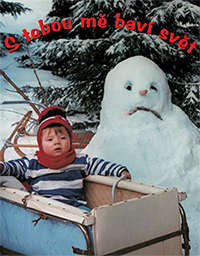

S tebou mě baví svět (č:1001)
Obsah:

Pánská jízda tří kamarádů se změní poté, co si jejich manželky prosadí, že si musí s sebou vzít všechny děti. Jak dopadne společně strávená dovolená na horské chatě v Beskydech s partou nezbedných dětí? Čeká vás spousta humorných situací a zábavných historek, které vás zaručeně pobaví.
Režie a scénář:
Marie Poledňáková
Kamera:
Petr Polák
Hrají:
Július Satinský, Václav Postránecký, Pavel Nový, Jana Šulcová, Eliška Balzerová, Zdena Studenková a další.